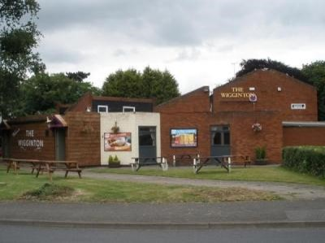
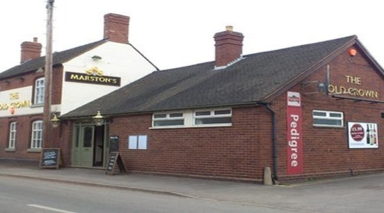
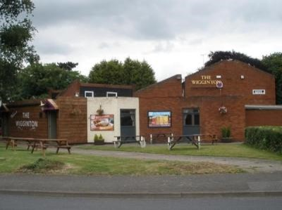
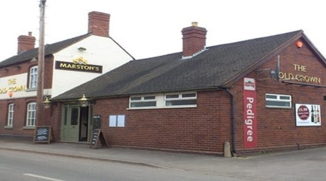
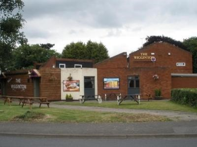
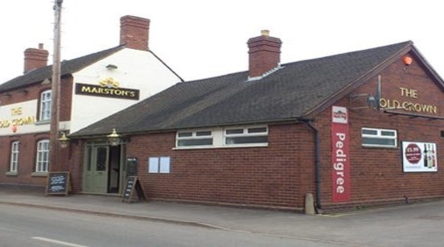

I am currently a graduate of degree in Information and Communication Technology at De Montfort University, where my favorite aspects have been building database applications, coding and fixing hardware.
Full EU driving license
Experience in coding: HTML5, CSS, JavaScript, C# and SQL. Past projects include databases and websites such as this one
Have built and repaired my own PC
Use of Microsoft office applications on a daily basis
I am currently a third year student studying Information and Communications Technology
A Level Results: Applied ICT (c), Sociology (c), Media Studies (d)
Obtained 9 GCSE’s of an A-C grade, including English (c) and Mathematics (b).


| Company | Employment Period | Job Description |
|---|---|---|
| The Wigginton Pub, Tamworth | October 2013 to June 2017 | Chef/Barman |
| Leicester City Football Club | September 2015 to June 2017 | Barman/Furniture Porter |
| The Old Crown, Tamworth | June 2017 to May 2018 | Chef/Barman |
| B&Q, Tamworth | August 2018 to present | Showroom Advisor |
Interest in Music: Play bass guitar in a band with friends
I am an enthusiastic skateboarder and made a YouTube channel where I edited footage that I filmed to provide a platform for skaters to share what they could do
Play for two 6 aside football team: play twice a week and this demonstrates my teamwork skills.
Young Enterprise: We spent 6 months, making a business and going against other teams from different schools to be the best, through presentations and business plans. In this operation I was the IT specialist making dummy websites and preparing the presentations.